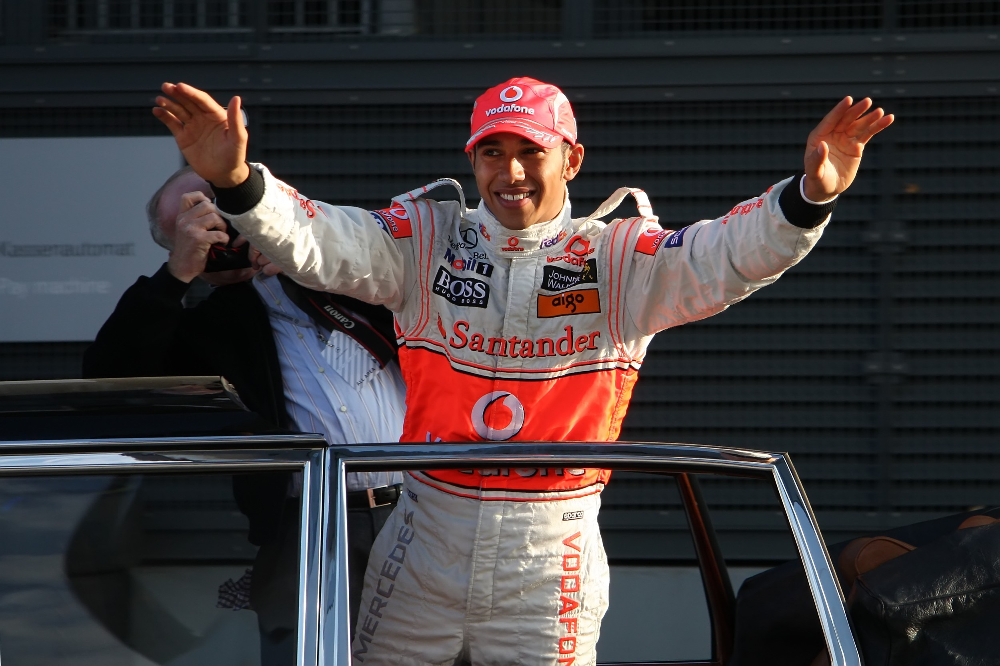
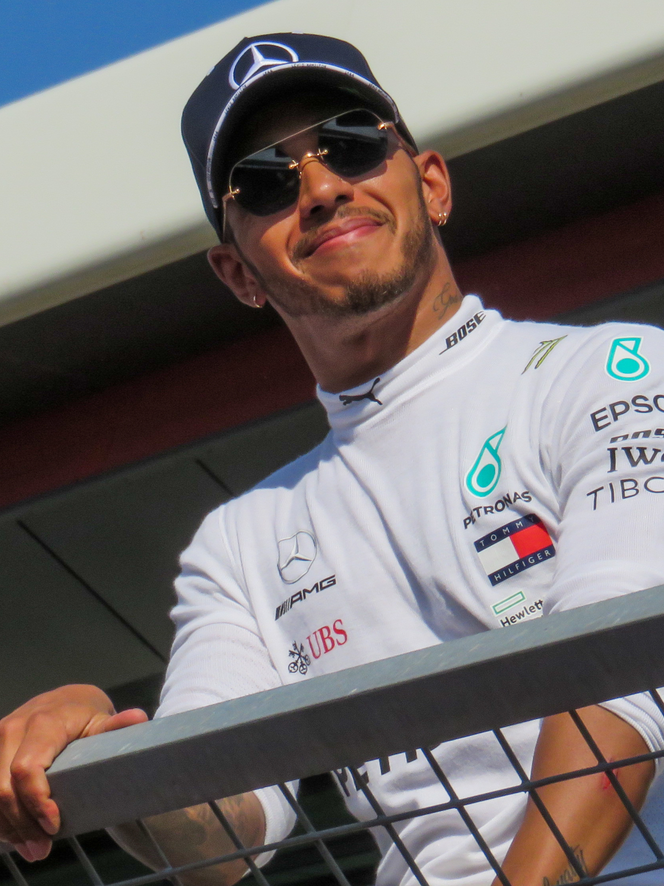
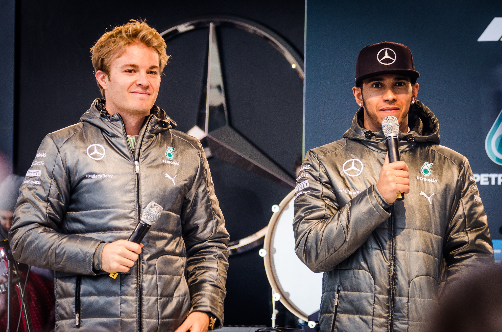

Sir Lewis Carl Davidson Hamilton, nato il 7 gennaio 1985 a Stevenage, in Inghilterra, è uno dei piloti più importanti nella storia della Formula 1. La sua carriera inizia nel karting, dove dimostra fin da giovanissimo un talento straordinario, attirando l'attenzione della McLaren, che lo inserisce nel proprio programma giovani. Nel 2007 debutta in Formula 1 con la scuderia britannica e sfiora immediatamente il titolo mondiale, conquistando il secondo posto nella classifica piloti. L'anno successivo, nel 2008, diventa campione del mondo per la prima volta, entrando nella storia come uno dei più giovani campioni della categoria. Nonostante la gratitutdine nei confronti della McLaren nel 2013 decide di firmare il contratto con la Mercedes segnando l'inizio di un'era straordinaria. Hamilton conquista altri sei titoli mondiali diventando il secondo pilota nella storia della Formula 1 ad avere 7 titoli mondiali insieme a Michael Schumacher. Inoltre stabilisce dei record eccezionali per vittorie, pole position e podi che nessuno, per ora, ha ancora battuto. Oltre ai risultati sportivi, si distingue per il suo impegno contro le discriminazioni e per la promozione della diversità nel motorsport e nel 2021 è stato nominato cavaliere del Regno Unito, ottenendo il titolo di Sir per il suo imoegno e per i suoi meriti sportivi.


Nel corso degli anni, Hamilton si è gudagnato il titolo di più grande leggenda dell'automobilismo. I suoi sette titoli mondiali, conquistati nel 2008, 2014, 2015, 2017, 2018, 2019 e 2020, rappresentano uno dei risultati più prestigiosi nella storia della Formula 1. A questi si aggiungono oltre cento vittorie nei Gran Premi e il record di 104 pole position, testimonianza della sua velocità e della sua capacità di competere ai massimi livelli in condizioni molto diverse.
La rivalità tra Lewis Hamilton e Nico Rosberg rappresenta una delle vicende più intense e affascinanti della Formula 1 moderna. I due piloti si conoscevano fin da bambini, quando gareggiavano insieme nel karting, ma il loro rapporto, inizialmente caratterizzato da amicizia e rispetto reciproco, cambiò profondamente quando si ritrovarono compagni di squadra in Mercedes nel 2013. Le stagioni dal 2014 al 2016 sono ricordate dai tifosi non solo per il dominio indiscusso della Mercedes ma anche per l'accesa rivalità tra Nico Rosberge e Lewis Hamilton. Furono stagioni piene di episodi controversi dove tutti e due i piloti ad ogni gara miravano a danneggiare il compagno di squadra causando bandiere gialle o con contatti ravvicinati ma ben studiati per portare al ritiro dell'altra monoposto. Nonostante tutto Hamilton riuscì ad aggiuducarsi i titoli del 2014 e 2015 aumentando però la pressione sul compagno di squadra che quasi sembrava volesse mollare il colpo per l'anno successivo. Sfortunatamente per Hamilton non fu così. Infatti, il capitolo conclusivo della loro rivalità arrivò nel 2016, una stagione segnata da antisportività, scontri in pista e tensioni interne che spinsero la Mercedes, guidata da Toto Wolff, a intervenire più volte per evitare che i due piloti danneggiassero anche gli interessi della squadra. Alla fine del campioanto fu Rosberg a vincere, chiudendo con soli cinque punti di vantaggio. Pochi giorni dopo aver realizzato il sogno Nico Rosberg annunciò a sorpresa il proprio ritiro dalla Formula 1, spiegando di non voler più affrontare il peso psicologico di una competizione tanto impegnativa. La loro storia rimane ancora oggi un simbolo del conflitto tra amicizia e ambizione sportiva, dimostrando come anche all'interno della stessa squadra la ricerca della vittoria possa trasformare un legame di lunga data in una rivalità leggendaria.

Nel febbraio 2024 viene annunciato ufficialmente il suo passaggio alla Scuderia Ferrari a partire dalla stagione 2025, una decisione che segna una svolta nella sua carriera dividendo però le opinioni dei tifosi di tutto il mondo. Molti ritenevano che la Ferrari non fosse la scuderia adatta per il pluricampione britannico mentre altri confidavano nelle sue abilità per riportare in auge la Ferrari. Il 20 gennaio 2025 Hamilton arriva a Maranello per iniziare la sua nuova avventura e, pochi giorni dopo, scende in pista a Fiorano al volante della SF-23, indossando per la prima volta i colori rossi e vivaci della squadra più iconica della Formula 1. La prima stagione si rivela complessa, ma regala un momento di gioia ai tifosi con la vittoria nella Sprint Race del Gran Premio di Cina ma con scarsi risultati nelle gare successive. Nel 2026, dopo il cambio di regolamento da parte della FIA, Hamilton conquista il suo primo Gran Premio con la Ferrari, vincendo il Gran Premio di Barcellona-Catalogna il 14 giugno. Questo successo rappresenta una tappa fondamentale del suo percorso perchè gli ha ridato quella fiducia e determinazione che negli ultimi anni non aveva più e conferma la sua volontà di scrivere un nuovo capitolo della propria leggenda.